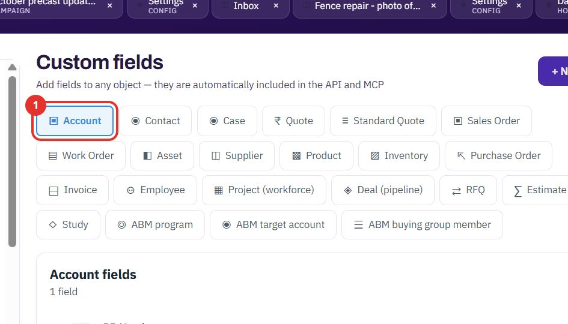

1
Choose the record type
Open Settings, then Custom fields under DATA. The buttons at the top are the record types, such as Account, Contact, Case, Quote, Product and Employee. Click the one that should get the field. The list below shows the fields it already has.
